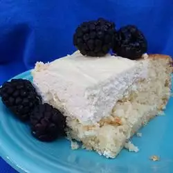

Cheese Cake

Description
It's a wonderful, easy, light cheese filled cake... but not a cheesecake!>
Ingredients
- 1 (18.25 ounce) package yellow cake mix
- 24 ounces ricotta cheese
- ¾ cup white sugar
- 3 eggs
- ¼ teaspoon vanilla extract
- one eight cup confectioners' sugar for dusting
Steps
- Preheat oven to 350 degrees F (175 degrees C). Lightly grease one 9x13 inch pan.
- Make yellow cake mix according to package directions. Pour batter into the greased 9x13 inch pan.
- Mix together the ricotta cheese, sugar, eggs and vanilla extract and spoon over cake batter.
- Bake at 350 degrees F (175 degrees C) for about 45 minutes. Sprinkle cake with confectioners' sugar when cool.